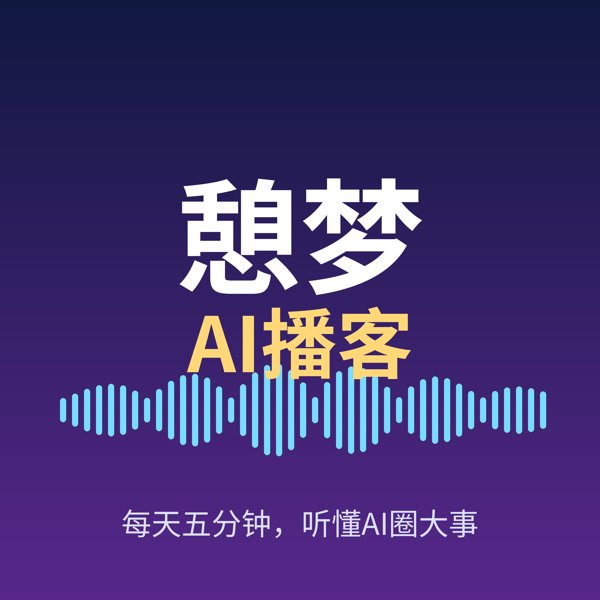

10月31日｜Anthropic递交上市申请，AI融资潮再升温
今日头条：Anthropic 递交上市申请，有望成为史上最受关注的科技IPO之一。还有：OpenAI 据报道加速新一轮约300亿美元融资；DeepSeek 据报道完成150亿美元融资，冲刺上海上市；大模型密集发布：GPT-6.1 Terra、Gemini 4 Carbon 与 Genie 4；Mistral 开放 Large 4 权重，开源阵营再添重磅。标注“据报道”的内容未经官方确认。

每天五分钟，听懂AI圈大事
憩梦AI播客，每天早上用五分钟，帮你梳理全球人工智能领域最重要的新闻：大模型发布、公司动态、融资上市、开源进展与政策监管。免费收听，每日更新。
在 Apple 播客、小宇宙等播客应用中，选择“通过链接/RSS 添加”，粘贴下面的订阅地址，每天自动更新：
https://oycw1688.github.io/qimeng-podcast/feed.xmlRSS今日头条：Anthropic 递交上市申请，有望成为史上最受关注的科技IPO之一。还有：OpenAI 据报道加速新一轮约300亿美元融资；DeepSeek 据报道完成150亿美元融资，冲刺上海上市；大模型密集发布：GPT-6.1 Terra、Gemini 4 Carbon 与 Genie 4；Mistral 开放 Large 4 权重，开源阵营再添重磅。标注“据报道”的内容未经官方确认。